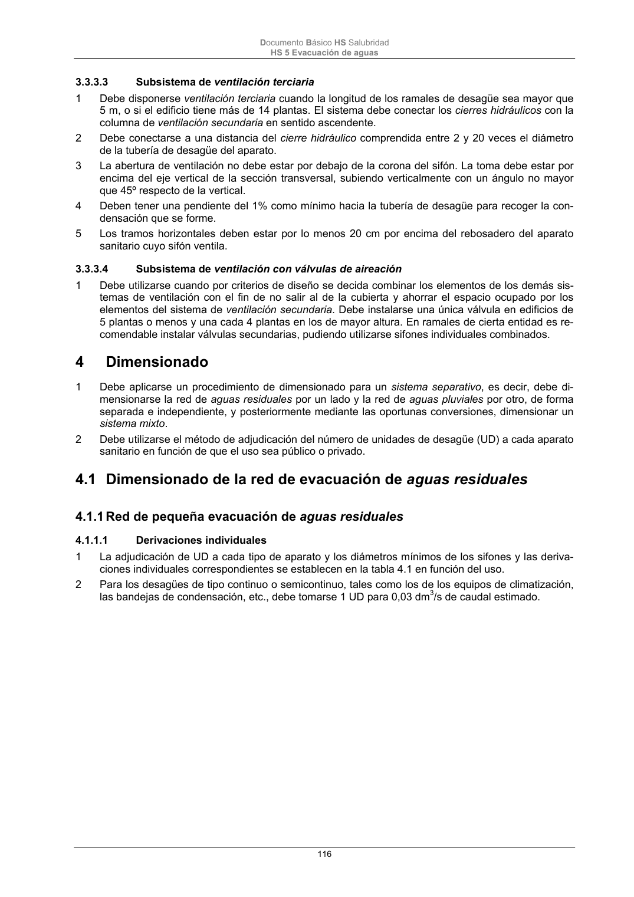

DB-HS · Fragmento de PDF p115 · versión 2022-06-14 · capa oficial
Formatos: JSON compacto · Markdown · PDF fuente
Ámbito del documento · texto del ámbito · documento y tablas
ID técnico a0259 · PDF pág. 115-116 · jerarquía no validada por persona · no es capítulo: sin_linea_de_encabezado · padre: raíz · literal original en el contenido: «3.3.3 Subsistemas de ventilación de las instalaciones»
3.3.3 Subsistemas de ventilación de las instalaciones 1 Deben disponerse subsistemas de ventilación tanto en las redes de aguas residuales como en las de pluviales. Se utilizarán subsistemas de ventilación primaria, ventilación secundaria, ventilación terciaria y ventilación con válvulas de aireación-ventilación. 3.3.3.1 Subsistema de ventilación primaria 1 Se considera suficiente como único sistema de ventilación en edificios con menos de 7 plantas, o con menos de 11 si la bajante está sobredimensionada, y los ramales de desagües tienen menos de 5 m. 2 Las bajantes de aguas residuales deben prolongarse al menos 1,30 m por encima de la cubierta del edificio, si esta no es transitable. Si lo es, la prolongación debe ser de al menos 2,00 m sobre el pa- vimento de la misma. 3 La salida de la ventilación primaria no debe estar situada a menos de 6 m de cualquier toma de aire exterior para climatización o ventilación y debe sobrepasarla en altura. 4 Cuando existan huecos de recintos habitables a menos de 6 m de la salida de la ventilación prima- ria, ésta debe situarse al menos 50 cm por encima de la cota máxima de dichos huecos. 5 La salida de la ventilación debe estar convenientemente protegida de la entrada de cuerpos extra- ños y su diseño debe ser tal que la acción del viento favorezca la expulsión de los gases. 6 No pueden disponerse terminaciones de columna bajo marquesinas o terrazas. 3.3.3.2 Subsistema de ventilación secundaria 1 En los edificios no incluidos en el punto 1 del apartado anterior debe disponerse un sistema de ven- tilación secundaria con conexiones en plantas alternas a la bajante si el edificio tiene menos de 15 plantas, o en cada planta si tiene 15 plantas o más. 2 Las conexiones deben realizarse por encima de la acometida de los aparatos sanitarios. 3 En su parte superior la conexión debe realizarse al menos 1 m por encima del último aparato sanita- rio existente, e igualmente en su parte inferior debe conectarse con el colector de la red horizontal, en su generatriz superior y en el punto más cercano posible, a una distancia como máximo 10 ve- ces el diámetro del mismo. Si esto no fuera posible, la conexión inferior debe realizarse por debajo del último ramal. 4 La columna de ventilación debe terminar conectándose a la bajante, una vez rebasada la altura mencionada, o prolongarse por encima de la cubierta del edificio al menos hasta la misma altura que la bajante. 5 Si existe una desviación de la bajante de más de 45º, debe considerarse como tramo horizontal y ventilarse cada tramo de dicha bajante de manera independiente. Documento Básico HS Salubridad HS 5 Evacuación de aguas 116 3.3.3.3 Subsistema de ventilación terciaria 1 Debe disponerse ventilación terciaria cuando la longitud de los ramales de desagüe sea mayor que 5 m, o si el edificio tiene más de 14 plantas. El sistema debe conectar los cierres hidráulicos con la columna de ventilación secundaria en sentido ascendente. 2 Debe conectarse a una distancia del cierre hidráulico comprendida entre 2 y 20 veces el diámetro de la tubería de desagüe del aparato. 3 La abertura de ventilación no debe estar por debajo de la corona del sifón. La toma debe estar por encima del eje vertical de la sección transversal, subiendo verticalmente con un ángulo no mayor que 45º respecto de la vertical. 4 Deben tener una pendiente del 1% como mínimo hacia la tubería de desagüe para recoger la con- densación que se forme. 5 Los tramos horizontales deben estar por lo menos 20 cm por encima del rebosadero del aparato sanitario cuyo sifón ventila. 3.3.3.4 Subsistema de ventilación con válvulas de aireación 1 Debe utilizarse cuando por criterios de diseño se decida combinar los elementos de los demás sis- temas de ventilación con el fin de no salir al de la cubierta y ahorrar el espacio ocupado por los elementos del sistema de ventilación secundaria. Debe instalarse una única válvula en edificios de 5 plantas o menos y una cada 4 plantas en los de mayor altura. En ramales de cierta entidad es re- comendable instalar válvulas secundarias, pudiendo utilizarse sifones individuales combinados. 4

PDF fuente redistribuible: copia fiel enlazada en esta página (SHA256 verificado).